Refer to Figure 11.2 in the text book.
Neglecting , the output range is to .
The bias current is,  .
.
Consider the sine wave form is shown in Figure 1.
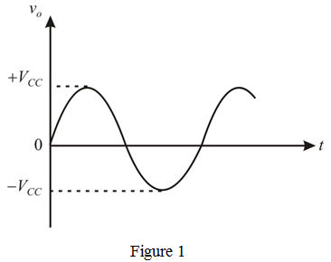
Refer to Figure 11.2 in the text book.
Neglecting , the output range is to .
The bias current is, .
Consider the sine wave form is shown in Figure 1.
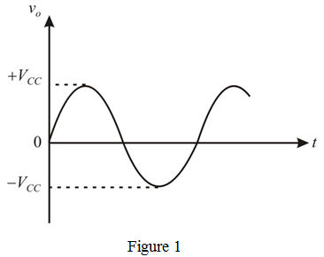
The corresponding square wave with swing from to is shown in Figure 2.
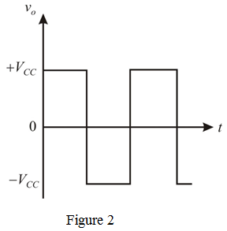
Consider the waveform shown in Figure 3.
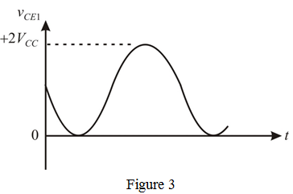
The corresponding square wave with swing from to  is shown in Figure 4.
is shown in Figure 4.
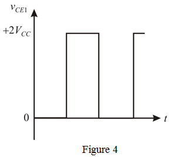
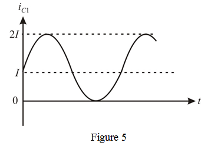
The corresponding square wave form with swing  to
to  is shown in Figure 6.
is shown in Figure 6.
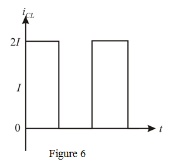
The power dissipation sine waveform is shown in Figure 7.
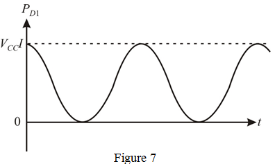
The power dissipation is,
Multiply these square wave forms.
The corresponding power dissipation square wave is shown in Figure 8.
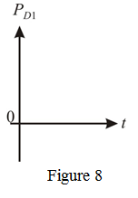
If the square wave of peak amplitude is levels then the resulting wave form is shown in Figure 9.
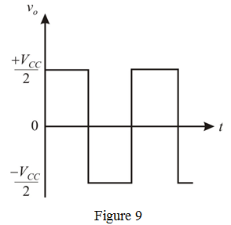
to is shown in Figure 10.
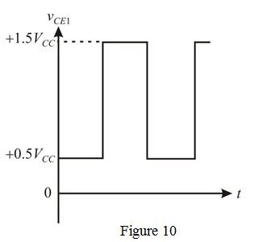
The collector current waveform is shown in Figure 11.
The current is,

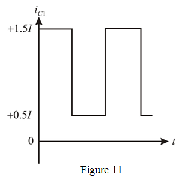
The average power dissipation is

The power dissipation waveform is shown in Figure 12.
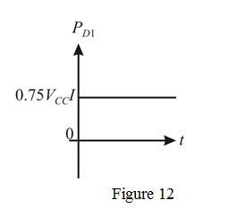
The sine wave peak amplitude of
The voltage at the collector of transistor  is,
is,

The bias current is,

The collector current at the transistor  is,
is,
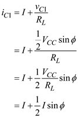
The collector to emitter voltage of the transistor  is
is
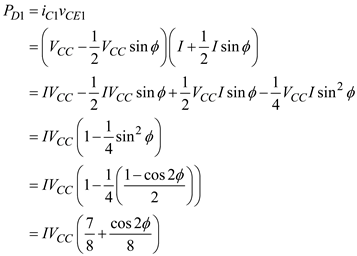
Therefore, the average power dissipation (average of the cos function is zero) is
.